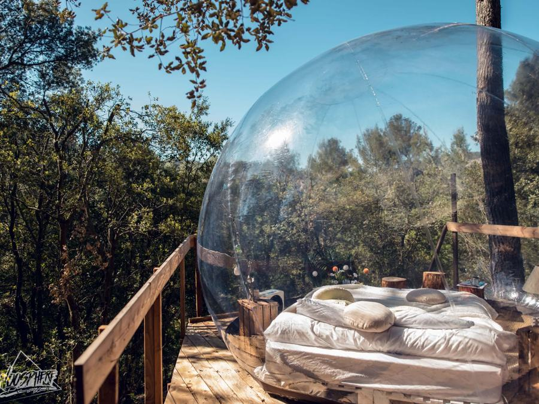

Qui suis-je ?
Un hôtelier qui teste
les hôtels des autres.
Je m'appelle Jules Bourdon. J'ai travaillé dans plusieurs maisons 3, 4 et 5 étoiles, en France et à l'étranger, et l'hôtellerie est une vraie passion. Nuits Singulières est mon carnet de conseils : des lieux que je repère, que je teste, et que je vous recommande, sans rien toucher en retour.
Mon regard
Voir ce que les clients ne voient pas
Quand on a passé des années de l'autre côté du comptoir, on ne séjourne plus jamais tout à fait comme un client. On remarque la façon dont on vous accueille à l'arrivée, le soin d'une literie, la justesse d'un service, la cohérence entre ce qu'un lieu promet et ce qu'il offre vraiment.
Tester des hôtels est devenu ma passion. J'ai voulu partager ce regard de professionnel avec ceux qui cherchent une nuit qui sort de l'ordinaire : un avis honnête, concret, qui dit aussi ce qui peut décevoir, et quelques conseils de l'intérieur pour vivre le meilleur séjour possible.
Ce site est gratuit, sans publicité et sans commission : il n'a qu'un but, vous aider à bien choisir.
Ma méthode
- RepérerJe sélectionne des lieux vraiment singuliers : une architecture, une histoire, un site ou une façon de dormir qu'on ne trouve presque nulle part ailleurs.
- TesterJ'y séjourne, comme un client. Les fiches concernées portent le badge « ✓ Testé », avec la date du séjour.
- NoterSix critères notés sur 10 : accueil, chambre, literie, table, service et rapport qualité-prix.
- DistinguerLes hôtels testés qui obtiennent au moins 8,5/10, et que je recommande sans réserve, rejoignent mes coups de cœur.
- ConseillerCe que j'ai aimé, ce que j'ai moins aimé, et « le conseil du pro » : quelle chambre demander, quand venir, ce qu'il ne faut pas manquer.
Charte d'indépendance
Mes engagements
- 01
Aucune commission
Le site ne participe à aucun programme d'affiliation. Les boutons « Réserver en direct » mènent au site officiel de chaque établissement : vous réservez directement auprès de lui, sans intermédiaire.
- 02
Personne ne paie pour figurer ici
Aucun établissement ne paie pour être présenté, mieux placé ou mieux noté. Mes coups de cœur se méritent : seuls comptent le séjour et la note, jamais une invitation.
- 03
Les séjours offerts sont signalés
Il arrive qu'un établissement m'invite à tester ses chambres. Dans ce cas, l'avis l'indique clairement. L'établissement ne relit pas l'avis et n'a aucun droit de regard sur son contenu.
- 04
Honnête, même sur les défauts
Chaque avis dit ce qui m'a moins plu, et chaque fiche pour qui le lieu est fait… et pour qui il l'est moins. Les budgets sont indicatifs : le tarif exact est celui de l'établissement.
Repéré ou testé
Comment lire les fiches
Toutes les adresses du site ont été choisies avec soin, à partir des sites officiels des établissements et des offices de tourisme. Celles où j'ai séjourné portent en plus le badge « ✓ Testé » et mon avis détaillé, signé et daté.
Une information vous semble inexacte, un lieu a changé, ou vous voulez me suggérer une adresse ? Écrivez-moi : je lis tous les messages.

Le quiz ✦ 1 minuteQuelle nuit insolite est faite pour vous ?Faire le quiz →